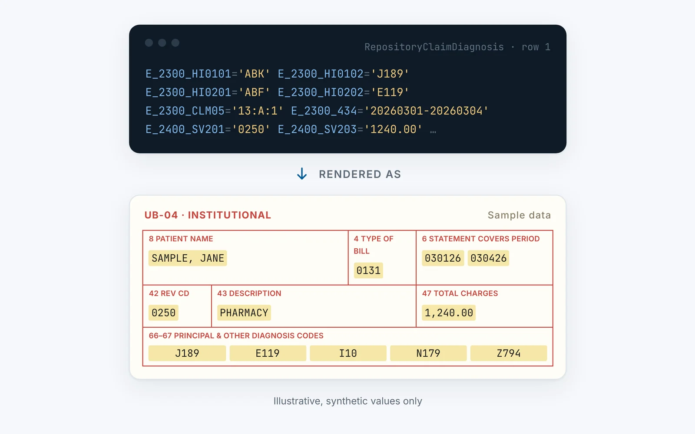

Home / Workshop / ClaimTracker
Healthcare · legacy replacement
NEWClaimTracker
A Django rebuild of a legacy healthcare claims viewer. Reads EDI 837 claims and renders print-accurate UB-04 and CMS-1500 forms, with PDF, Word and CSV export.

A replacement for an aging internal claims viewer that nobody had documentation for. Healthcare claims arrive as X12 EDI 837 files, both institutional (837I) and professional (837P), and get parsed into a SQL Server database. ClaimTracker reads them back out and shows each claim the way people actually know it: as a UB-04 or CMS-1500 form.
The forms are print-accurate, down to the real numbered-box layout. Staff can browse by date, provider or member, or search directly, see the claim’s live adjudication status, and export the open claim as a PDF, a Word document or a CSV.
Most of the work was reading the old system closely enough to reproduce what it actually did, not what anyone remembered it doing.
Highlights
- Feature parity with the legacy viewer: search, browse and the real form layouts
- Live adjudication status for the selected claim
- PDF, Word (.docx) and CSV export from a floating export button
- Access control with an audit trail of who viewed which claim
- Access
- private · work
- Year
- 2026
- Built with
- Django, SQL Server, X12 EDI, Playwright